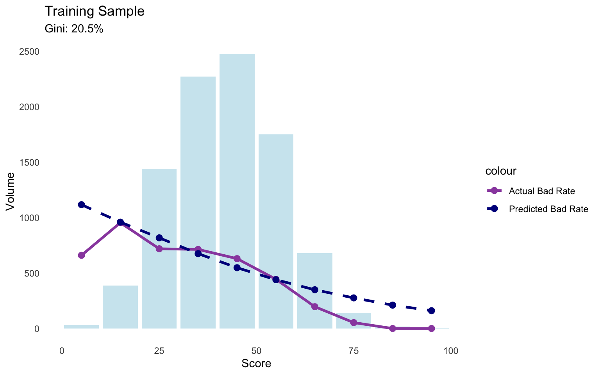
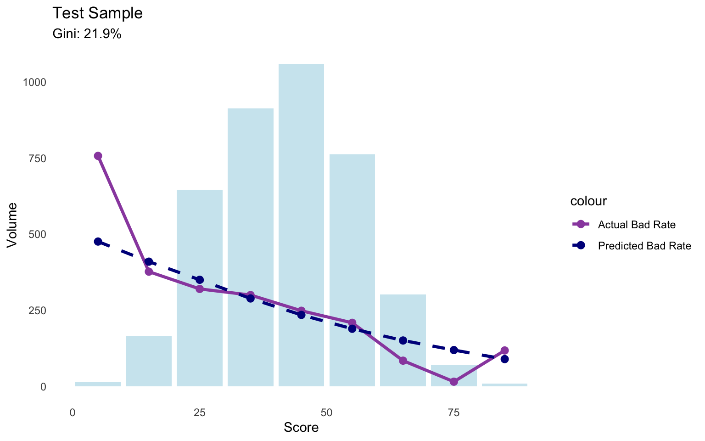
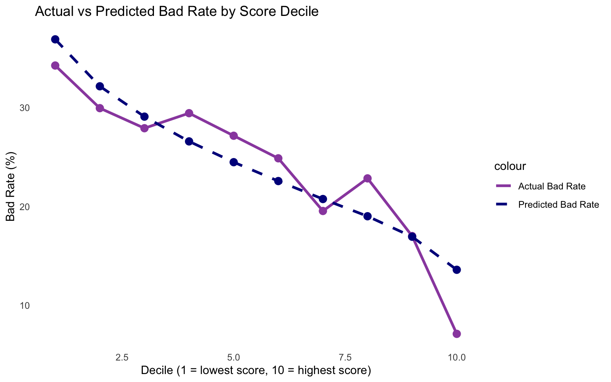
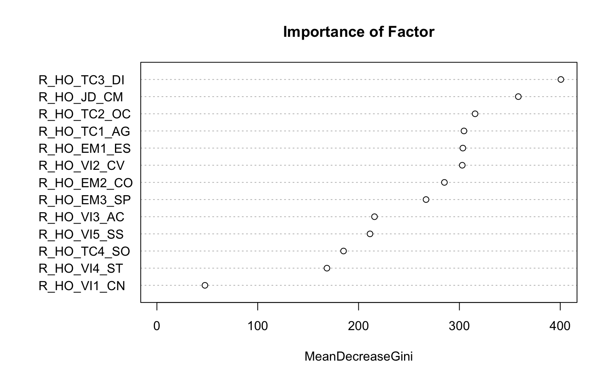
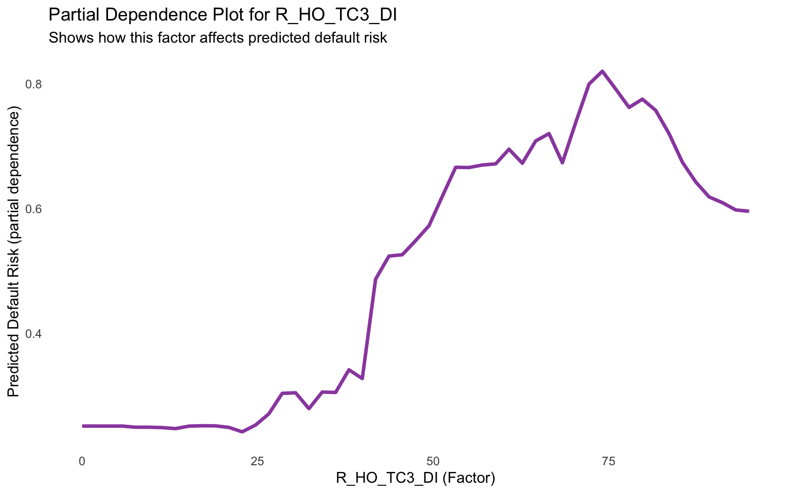
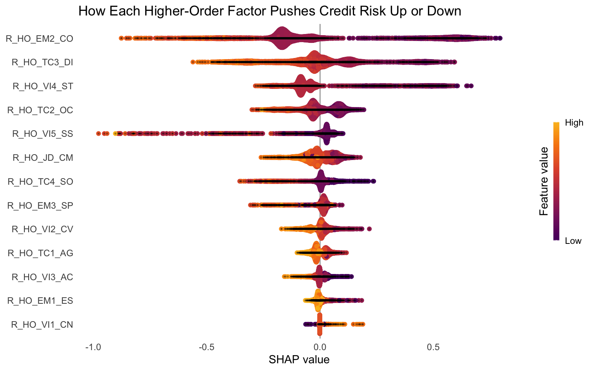
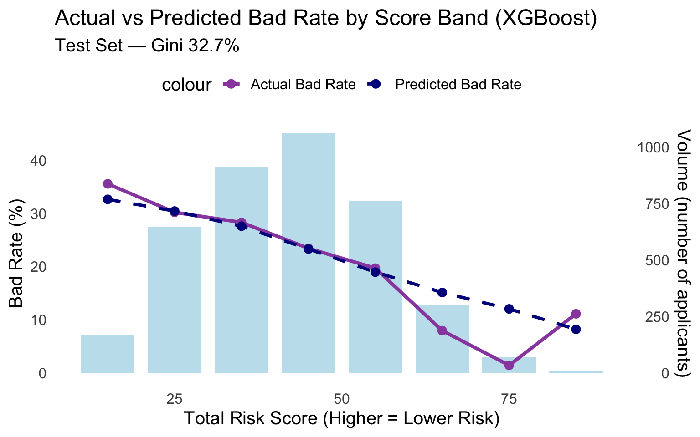

Traditionally, credit risk has been scored using statistical models that rely on historical financial data to predict a borrower’s likelihood of repayment. These models assign weights to factors like payment history, outstanding debt, length of credit history, types of credit used, and recent credit inquiries. However, traditional scoring methods exclude individuals with limited credit histories and financial data. To address this, bureaus are increasingly utilising alternative data sources to assess creditworthiness for those who are typically under-served by conventional credit scoring methods. The Dynamic Risk Assessment (DRA) was developed to provide a psychometric-based score that can be used to predict risk across various credit products, irrespective of formal credit history.
Aim
The aim of this analysis is to demonstrate how psychometric data can be used to create a reliable credit risk score for people with a limited credit history (thin-file applicants). We also compare simple models like logistic regression with advanced Machine Learning (ML) techniques to showcase how these methods capture complex relationships and improve predictive power.
Methods
We tested:
Logistic Regression (baseline model) on the Total Risk Score, dimensions, and higher-order factors.
SVM, Random Forest, XGBoost and SuperLearner on the 13 higher-order factors.
Models were compared using Gini coefficient (measure of discriminatory power) and AUC on the same test set. This approach ensures a fair comparison and shows the value of ML for psychometric scoring.
Data
This analysis uses real psychometric assessment data. The scores have been scaled such that risk reduces as the score increases. Additionally, the scores were mapped to a range of 0 to 100.
To protect intellectual property, the names of the DRA variables have been generalized or renamed in this public version. The underlying constructs and relationships remain representative of the actual assessment.
All financial data (accounts, arrears, age on book, bad outcome) is simulated to match realistic distributions, correlations, and patterns from the original analysis (based on a South African thin-file population). The bad outcome (default, bad = 1) was defined as ≥2 payments missed within 6 months, with an overall bad rate of 24.2% in the final population.
No real candidate or client information is included. Minor differences in model performance compared to the original analysis are expected due to simulation noise.
The initial sample consisted of 44,998 individuals who had completed the DRA assessment in South Africa between January 2024 and March 2025 (the observation point).
Show code
modeling_data <- raw_data %>%# 1. No arrears at assessment (worst_arrears_assess == 0)filter(worst_arrears_assess ==0) %>%# 2. Not very credit active at assessment (≤ 4 accounts)filter(num_accounts_assess <=4) %>%# 3. Not very credit active at performance (≤ 5 accounts)filter(num_accounts_perf <=5) %>%# 4. Accounts old enough to observe repayment (≥ 3 months on book)filter(age_oldest_perf >=3) %>%# 5. Had some credit activity to evaluate (at least one account at assess OR perf)filter(num_accounts_assess >0| num_accounts_perf >0)
To create the modeling population, we applied filters to focus on thin-file applicants. Individuals were excluded from the model population if, at the date of their assessment, they held any accounts that were in arrears, or if they held more than 4 active accounts (very credit active). Additionally, individuals were not included if they held 0 accounts at both the date assessed and the performance period (i.e. no credit activity to test), or if they held more than 5 accounts at the performance period (very credit active).
One missing value was identified in the data set. After exclusion criteria was applied and missing values dropped, the modelling population consisted of 13,136 records.
Correlational analysis indicates that higher scores on the DRA (reflecting lower risk) are negatively associated with defaulting.
Analysis
The data were split into training (70%) and test (30%) sets. All models were fitted on the training data (9,196 observations), and performance was evaluated on the held-out test set (3,940 observations).
Logistic Regression
Before moving to more complex algorithms, we first ran three simple logistic regression models using different levels of data: (1) the overall Total Risk Score, (2) the aggregated dimension scores, and (3) the 13 higher-order factors.
DRA Total Risk Score Only
First, a logistic regression model was fitted using only the total risk score as the predictor variable and the binary default outcome (bad = 1 if ≥2 payments missed within 6 months) as the target.
The model shows a highly significant negative coefficient for Total Risk meaning higher scores are associated with substantially lower default probability.
Performance Metrics
The Gini coefficient measures a model’s ability to differentiate between classes and ranges from 0 (random guessing) to 1 (perfect discrimination). In this case, the Gini coefficient measures how well an alternative psychometric score separates good applicants (low credit risk) from bad ones (high credit risk).
Show code
# Predict probabilities on training settrain_data$pred_prob <-predict(log_model, newdata = train_data, type ="response")# Gini on training setpred_obj_train <-prediction(train_data$pred_prob, train_data$bad)auc_train <-performance(pred_obj_train, measure ="auc")@y.values[[1]]gini_train <- (2* auc_train -1) *100cat(sprintf("Training set AUC: %.3f\n", auc_train))
Training set AUC: 0.603
Show code
cat(sprintf("Training set Gini: %.1f%%\n", gini_train))
Training set Gini: 20.5%
Show code
# Predict probabilities on test settest_data$pred_prob <-predict(log_model, newdata = test_data, type ="response")# Calculate Gini / AUC on test setpred_obj <-prediction(test_data$pred_prob, test_data$bad)auc_val <-performance(pred_obj, measure ="auc")@y.values[[1]]gini_val <- (2* auc_val -1) *100cat(sprintf("Test set AUC: %.3f\n", auc_val))
Test set AUC: 0.609
Show code
cat(sprintf("Test set Gini: %.1f%%\n", gini_val))
Test set Gini: 21.9%
Show code
# Score to bad rate - actuals and predictions per sample # Helper function to prepare data for one populationprepare_bin_data <-function(data, score_col ="Total_Risk_Score", bad_col ="bad", pred_col ="pred_prob") { data %>%mutate(score_bin =cut(.data[[score_col]], breaks =seq(0, 100, by =10), include.lowest =TRUE, labels =paste0(seq(0, 90, by =10), "-", seq(10, 100, by =10))),score_mid =as.numeric(sub("-.*", "", as.character(score_bin))) +5# midpoint for lines ) %>%group_by(score_bin, score_mid) %>%summarise(volume =n(),actual_bad_rate =mean(.data[[bad_col]]) *100,predicted_bad_rate =mean(.data[[pred_col]]) *100,.groups ="drop" ) %>%mutate(volume_cum =cumsum(volume) /sum(volume) *100 )}# Prepare data for each populationtrain_bins <- train_data %>%prepare_bin_data()test_bins <- test_data %>%prepare_bin_data()# Plotggplot(train_bins, aes(x = score_mid)) +geom_bar(aes(y = volume), stat ="identity", fill ="lightblue", alpha =0.6, width =9) +# Actual bad rate linegeom_line(aes(y = actual_bad_rate *max(volume) /100, color ="Actual Bad Rate"), linewidth =1.2) +geom_point(aes(y = actual_bad_rate *max(volume) /100, color ="Actual Bad Rate"), size =2.5) +# Predicted bad rate linegeom_line(aes(y = predicted_bad_rate *max(volume) /100, color ="Predicted Bad Rate"), linewidth =1.2, linetype ="dashed") +geom_point(aes(y = predicted_bad_rate *max(volume) /100, color ="Predicted Bad Rate"), size =2.5) +scale_color_manual(values =c("Actual Bad Rate"="#9A4EAE", "Predicted Bad Rate"="darkblue")) +labs(title ="Training Sample",subtitle ="Gini: 20.5%", x ="Score",y ="Volume", ) +theme_minimal() +theme(legend.position ="right",panel.grid.major =element_blank(),panel.grid.minor =element_blank() )

Show code
ggplot(test_bins, aes(x = score_mid)) +geom_bar(aes(y = volume), stat ="identity", fill ="lightblue", alpha =0.6, width =9) +# Actual bad rate linegeom_line(aes(y = actual_bad_rate *max(volume) /100, color ="Actual Bad Rate"), linewidth =1.2) +geom_point(aes(y = actual_bad_rate *max(volume) /100, color ="Actual Bad Rate"), size =2.5) +# Predicted bad rate linegeom_line(aes(y = predicted_bad_rate *max(volume) /100, color ="Predicted Bad Rate"), linewidth =1.2, linetype ="dashed") +geom_point(aes(y = predicted_bad_rate *max(volume) /100, color ="Predicted Bad Rate"), size =2.5) +scale_color_manual(values =c("Actual Bad Rate"="#9A4EAE", "Predicted Bad Rate"="darkblue")) +labs(title ="Test Sample",subtitle ="Gini: 21.9%", x ="Score",y ="Volume", ) +theme_minimal() +theme(legend.position ="right",panel.grid.major =element_blank(),panel.grid.minor =element_blank() )

The model produced a Gini of 20.5% on the training data, with a slightly higher Gini of 21.9% observed on the test data. The small difference between training and test Gini suggests the model generalizes well.
Decile Analysis - Risk Ranking Performance
To evaluate how well the total risk score separates good from bad applicants, the test sample was divided into 10 equal-sized groups (deciles). Decile 1 contains the lowest-scoring (highest-risk) applicants, while decile 10 contains the highest-scoring (lowest-risk) applicants.
The table below shows the performance within each decile:
Show code
# Decile analysis (actual vs predicted bad rate)decile_summary <- test_data %>%mutate(Decile =ntile(Total_Risk_Score, 10)) %>%group_by(Decile) %>%summarise(`Average Total Risk`=mean(Total_Risk_Score),`Actual Bad Rate (%)`=mean(bad) *100,`Predicted Bad Rate (%)`=mean(pred_prob) *100 ) %>%arrange(Decile)kable( decile_summary,digits =1,caption ="Decile Summary (Test Data)") %>%kable_styling(full_width =FALSE, bootstrap_options =c("striped", "hover"))
Decile Summary (Test Data)
Decile
Average Total Risk
Actual Bad Rate (%)
Predicted Bad Rate (%)
1
19.5
34.3
36.9
2
26.9
29.9
32.2
3
32.0
27.9
29.1
4
36.4
29.4
26.6
5
40.3
27.2
24.5
6
44.1
24.9
22.6
7
47.9
19.5
20.8
8
51.8
22.8
19.0
9
56.8
17.0
16.9
10
66.2
7.1
13.6
The actual bad rate decreases steadily from 34.3% in the lowest-scoring group (decile 1) to 7.1% in the highest-scoring group (decile 10), demonstrating strong risk differentiation.
The predicted bad rates closely track the actual bad rates across all deciles, indicating good model calibration.
Show code
# Actual vs predicted bad rates by decile ggplot(decile_summary, aes(x = Decile)) +geom_line(aes(y =`Actual Bad Rate (%)`, color ="Actual Bad Rate"), linewidth =1.2) +geom_line(aes(y =`Predicted Bad Rate (%)`, color ="Predicted Bad Rate"), linewidth =1.2, linetype ="dashed") +geom_point(aes(y =`Actual Bad Rate (%)`), color ="#9A4EAE", size =3) +geom_point(aes(y =`Predicted Bad Rate (%)`), color ="darkblue", size =3) +scale_color_manual(values =c("Actual Bad Rate"="#9A4EAE", "Predicted Bad Rate"="darkblue")) +labs(title ="Actual vs Predicted Bad Rate by Score Decile",x ="Decile (1 = lowest score, 10 = highest score)",y ="Bad Rate (%)") +theme_minimal() +theme(legend.position ="right",panel.grid.major =element_blank(),panel.grid.minor =element_blank() )

The graph shows the actual versus predicted bad rate by decile. This monotonic downward trend confirms that the DRA total risk score effectively ranks applicants by credit risk (i.e., higher scores correspond to substantially lower default probability).
DRA Dimension Scores
A second logistic regression model was fitted using the DRA dimension scores to predict the binary default outcome (bad = 1 if ≥2 payments missed).
Three (emotional understanding, principles, and core traits) out of the four dimensions have a significant negative coefficient, indicating that higher scores are associated with substantially lower default probability.
Show code
# Predict on testtest_data_dim$pred_prob_dim <-predict(log_model_dim, newdata = test_data_dim, type ="response")# Evaluatepred_obj_dim <-prediction(test_data_dim$pred_prob_dim, test_data_dim$bad)auc_dim <-performance(pred_obj_dim, "auc")@y.values[[1]]gini_dim <- (2* auc_dim -1) *100cat(sprintf("Model Test AUC: %.3f | Gini: %.1f%%\n", auc_dim, gini_dim))
Model Test AUC: 0.605 | Gini: 21.0%
The model with DRA dimension scores achieved a test Gini of 21.0% which is comparable to the single-score model (Gini 21.9%).
DRA Higher-Order Factor Scores
A third logistic regression model was fitted using lower-level data with DRA higher-order factor scores (n = 13) entered as predictors.
# Predict on testtest_data_HO$pred_prob_HO <-predict(log_model_factor, newdata = test_data_HO, type ="response")# Evaluatepred_obj_HO <-prediction(test_data_HO$pred_prob_HO, test_data_HO$bad)auc_HO <-performance(pred_obj_HO, "auc")@y.values[[1]]gini_HO <- (2* auc_HO -1) *100cat(sprintf("Model Test AUC: %.3f | Gini: %.1f%%\n", auc_HO, gini_HO))
Model Test AUC: 0.633 | Gini: 26.5%
The logistic regression model using the DRA higher-order factor scores achieved the highest test Gini of 26.5% among the three models tested. A higher Gini means the model has a stronger ability to separate people who will default from those who will not.
We therefore used these same 13 higher-order factors as the predictors for all subsequent analyses. This approach allowed us to compare how more advanced Machine Learning (ML) techniques perform relative to a baseline model.
Support Vector Machine (SVM)
Support Vector Machine (SVM) is a classic machine-learning algorithm that tries to find the best possible line (or hyperplane) to separate good borrowers from bad ones. It is very good at handling complex, non-linear relationships and has been a standard tool in credit risk for many years. In this section, we fitted an SVM model using the same 13 higher-order factors.
Show code
# ===================================================================# SVM on the 13 Higher-Order Factors# ===================================================================# Scale the features (SVM is sensitive to scale)train_scaled <-scale(train_data[, predictors_factor])test_scaled <-scale(test_data[, predictors_factor])# Train SVM with radial kernel svm_model <-svm(x = train_scaled,y =factor(train_data$bad), kernel ="radial",probability =TRUE, scale =FALSE, cost =10, gamma =0.05,class.weights =c("0"=1, "1"=1.8),seed =123)# Predict probabilities on test setsvm_pred_prob <-predict(svm_model, newdata = test_scaled, probability =TRUE)svm_prob_bad <-attr(svm_pred_prob, "probabilities")[, "1"] # probability of bad# Add to test_datatest_data$svm_pred_prob <- svm_prob_bad# Evaluate (pred_obj_svm <-prediction(test_data$svm_pred_prob, test_data$bad)auc_svm <-performance(pred_obj_svm, "auc")@y.values[[1]]gini_svm <- (2* auc_svm -1) *100cat(sprintf("SVM Test AUC: %.3f | Gini: %.1f%%\n", auc_svm, gini_svm))
SVM Test AUC: 0.608 | Gini: 21.7%
After tuning the parameters, the SVM achieved a test Gini of 21.7%.
Random Forest
Random forest is a supervised learning algorithm. It builds multiple models (known as decision trees) and merges them together, often capturing non-linear patterns and interactions better than logistic regression.
Show code
# Use the same split as before train_data$bad <-as.factor(train_data$bad)test_data$bad <-as.factor(test_data$bad) set.seed(123)rf_factor <-randomForest( bad ~ ., data = train_data[, c(predictors_factor, "bad")],ntree =1000,importance =TRUE,na.action = na.roughfix,seed =123)test_data$rf_pred_prob_factor <-predict(rf_factor, newdata = test_data, type ="prob")[, 2]
# R_HO_VI1_CN = significantly less useful predictor.
Variable importance in random forest quantifies how much each predictor contributes to the model’s performance.
How Variable Importance is Calculated:
Gini Impurity: At each node split in a tree, Gini measures how “pure” the classes are after the split (lower Gini = better split).
MeanDecreaseGini: For each predictor, sum the total Gini decrease across all splits where it was used, then average over all trees. High value = the feature frequently leads to strong purity improvements (i.e., it’s informative for classification).
How This Increases Prediction:
Feature Selection: High-importance variables drive splits more often, making the model focus on what matters, improving accuracy.
Reduces Noise: Low-importance features contribute less, preventing over-fitting to irrelevant signals.
This technique often boosts prediction by prioritizing strong discriminators.
Show code
varImpPlot(rf_factor, main ="Importance of Factor", type =2)

The plot shows MeanDecreaseGini — a measure of how much each predictor reduces node impurity (class mixing) across all trees in the random forest. One of the higher-order factors (R_HO_VI1_CN) contributed significantly less to model performance. We therefore excluded the least important predictor to test if a simpler model would maintain performance while reducing complexity.
Show code
# Excluding the lowest ranked predictor (R_HO_VI1_CN)predictors_factor_reduced <-setdiff(grep("^R_HO_", names(modeling_data), value =TRUE),"R_HO_VI1_CN")set.seed(123)# Factor-Level V2 rf_factor_v2 <-randomForest( bad ~ ., data = train_data[, c(predictors_factor_reduced, "bad")],ntree =1000,importance =TRUE,na.action = na.roughfix,seed =123)# Predictions on test settest_data$rf_pred_prob_factor_v2 <-predict(rf_factor_v2, newdata = test_data, type ="prob")[, 2]# Evaluatepred_obj_HO <-prediction(test_data$rf_pred_prob_factor_v2, test_data$bad)auc_HO <-performance(pred_obj_HO, "auc")@y.values[[1]]gini_HO <- (2* auc_HO -1) *100cat(sprintf("Simpler Model Test AUC: %.3f | Gini: %.1f%%\n", auc_HO, gini_HO))
Simpler Model Test AUC: 0.641 | Gini: 28.3%
Removing the least important predictor from the model resulted in a Gini coefficient of 28.3% compared to 28.2% for the full model. This shows that dropping low-importance factors can make the model more efficient, with no real drop in performance.
Partial Dependence Plots (PDPs)
Partial Dependence Plots are a useful tool to see how each factor affects default risk, while holding all other factors constant. We generated a PDP for the factor with the highest ranked importance in the Random Forest model.
Show code
rf_v2_importance <- rf_factor_v2$importancerf_v2_importance <- rf_v2_importance %>%as.data.frame() %>%rownames_to_column("Predictor") %>%arrange(desc(MeanDecreaseGini)) %>%select(c("Predictor", "MeanDecreaseGini"))# Top 3 - R_HO_TC3_DI, R_HO_JD_CM, R_HO_TC2_OC. # Partial dependence for one feature pdp_em2 <-partial(rf_factor_v2, pred.var ="R_HO_TC3_DI", train = train_data[, predictors_factor_reduced], plot =FALSE)# Plotggplot(pdp_em2, aes(x = R_HO_TC3_DI, y = yhat)) +geom_line(linewidth =1.2, color ="#9A4EAE") +labs(title ="Partial Dependence Plot for R_HO_TC3_DI",subtitle ="Shows how this factor affects predicted default risk",x ="R_HO_TC3_DI (Factor)",y ="Predicted Default Risk (partial dependence)" ) +theme_minimal() +theme(panel.grid.major =element_blank(),panel.grid.minor =element_blank() )

The inverted-U-shaped relationship in the partial dependence plot for R_HO_TC3_DI — where predicted default risk is low at very low scores, peaks sharply in the mid-range, and then declines again at high scores — is a classic example of a non-monotonic, non-linear pattern. Importantly, logistic regression assumes a linear relationship between each predictor and the outcome. Thus, while logistic regression remains a strong baseline due to its simplicity and interpretability, ML approaches like random forest provide a clear advantage in modelling complex patterns like this.
XGBoost
In this section, we tested an XGBoost model to determine whether more advanced ensemble techniques would deliver additional performance gains over the logistic regression (Gini 26.5%) and Random Forest (Gini 27.9%). eXtreme Gradient Boosting (XGBoost) is an advanced machine learning algorithm that builds decision trees sequentially to improve model performance.
How does XGBoost work?
Start with a base learner: The first model decision tree is trained on the data.
Calculate the errors: After training the first tree, the errors between the predicted and actual values are calculated.
Train the next tree: The next tree is trained on the errors of the previous tree. This step attempts to correct the errors made by the first tree.
Repeat the process: This process continues with each new tree trying to correct the errors of the previous trees until a stopping criterion is met.
Combine the predictions: The final prediction is the weighted sum of the predictions from all the trees, allowing the model to capture complex non-linear interactions that simpler methods often miss.
The XGBoost model achieved a test Gini of 32.7%. This result is stronger compared to the logistic regression model (the traditional benchmark in credit risk modelling) which achieved a test Gini coefficient of 26.5%. This gain arises because XGBoost can automatically detect and exploit complex non-linear interactions and higher-order relationships among DRA factors that a linear logistic model cannot capture. These results demonstrate that advanced machine-learning techniques such as XGBoost unlock significantly more predictive power than traditional or simpler machine-learning approaches.
Understanding the Model with SHAP
SHAP (SHapley Additive exPlanations) measures the impact of variables taking into account the interaction with other variables. So far we have seen that XGBoost beats logistic regression and Random Forest. But which factors actually matter, and in what direction? To answer this question we created a SHAP summary plot which shows how each higher-order factor pushed the model’s prediction up or down.
Show code
# Create the SHAP explainer using your existing model + test datashap_explain <-shapviz( xgb_model,X =as.matrix(test_data[, predictors_factor]), X_pred =as.matrix(test_data[, predictors_factor]))sv_importance(shap_explain, kind ="beeswarm", max_display =13 ) +geom_point(size =0.30, alpha =0.25) +# override size directlyggtitle("How Each Higher-Order Factor Pushes Credit Risk Up or Down") +theme_minimal() +theme(panel.grid.major =element_blank(),panel.grid.minor =element_blank() )

What does this plot show?
Each horizontal line is one of the 13 higher-order factors.
Each dot represents one person in the test dataset.
The horizontal position (SHAP value) shows how much that factor pushed the model’s prediction of default risk up (right) or down (left).
The colour tells you the person’s actual score on that factor: red/orange = high score, purple/blue = low score.
Note: The higher-order factors are ranked from most important (top) to least important (bottom) based on how much they improve the model’s predictions. Because higher scores mean lower credit risk, the plot shows that low scores (purple/blue dots) push the predicted default risk up (right side), while high scores (red/orange dots) push the predicted default risk down (left side).
What does this mean in practice? Instead of treating every higher-order factor equally, we can now focus on measuring the top 3–4 factors as these drive most of the default risk signal. Lenders can ask better questions, score applicants more accurately, and approve more low-risk thin-file customers with confidence.
Show code
# Decile table for XGBoost on the test set: Decile 1 = highest risk (worst)decile_summary_XG <- test_data %>%# Create risk decile: 1 = highest predicted bad rate (worst), 10 = lowest (best)mutate(Decile =ntile(-xgb_pred_prob, 10)) %>%group_by(Decile) %>%summarise(`Average Total Risk`=mean(Total_Risk_Score),`Actual Bad Rate (%)`=mean(bad) *100,`Predicted Bad Rate (%)`=mean(xgb_pred_prob) *100 ) %>%arrange(Decile)kable(decile_summary_XG, digits =1,caption ="XGBoost Decile Summary (Test Data) - Risk Decile 1 = Highest Risk") %>%kable_styling(full_width =FALSE, bootstrap_options =c("striped", "hover", "condensed")) %>%column_spec(1, bold =TRUE)
SuperLearner is a ‘meta-algorithm’ that combines multiple ML models into one super model. In this section, the meta-model combined predictions from logistic regression, Random Forest, and XGBoost - the final output is a weighted average of the individual models’ predictions.
The SuperLearner model, tested on the same 13 higher-order factors, achieved a Gini of 30.7%. While this is slightly lower than the standalone XGBoost (32.7%), the stacking approach outperformed logistic regression, SVM, and Random Forest. The Gini for the SuperLearner stacked ensemble is slightly lower than XGBoost because stacking averages predictions from multiple models, including weaker ones.
The most practical way to judge any credit model is to check whether its predicted bad rates match the real bad rates across different score levels. We created this chart for our best model (XGBoost) on the test set.
Show code
plot_data <- test_data %>%mutate(score_bin =cut(Total_Risk_Score, breaks =seq(0, 100, by =10),include.lowest =TRUE,labels =c("0-10", "10-20", "20-30", "30-40", "40-50","50-60", "60-70", "70-80", "80-90", "90-100")),score_mid =as.numeric(score_bin) *10-5) %>%filter(score_mid >=10) %>%group_by(score_bin, score_mid) %>%summarise(n =n(),actual_bad_rate =mean(bad) *100,predicted_bad_rate =mean(xgb_pred_prob) *100,.groups ="drop" )ggplot(plot_data, aes(x = score_mid)) +geom_bar(aes(y = n /max(n) *45), stat ="identity", fill ="lightblue", alpha =0.75, width =8) +geom_line(aes(y = actual_bad_rate, color ="Actual Bad Rate"), linewidth =1.35) +geom_point(aes(y = actual_bad_rate, color ="Actual Bad Rate"), size =2.8) +geom_line(aes(y = predicted_bad_rate, color ="Predicted Bad Rate"), linewidth =1.25, linetype ="dashed") +geom_point(aes(y = predicted_bad_rate, color ="Predicted Bad Rate"), size =2.8) +scale_color_manual(values =c("Actual Bad Rate"="#9A4EAE", "Predicted Bad Rate"="darkblue")) +scale_y_continuous(name ="Bad Rate (%)",sec.axis =sec_axis(~ . *max(plot_data$n) /45, name ="Volume (number of applicants)") ) +labs(title ="Actual vs Predicted Bad Rate by Score Band (XGBoost)",subtitle ="Test Set — Gini 32.7%",x ="Total Risk Score (Higher = Lower Risk)" ) +theme_minimal(base_size =15) +theme(legend.position ="top",panel.grid.major =element_blank(),panel.grid.minor =element_blank() )

The two lines track each other very closely. People with low scores (0–30) have high default rates (~35–45%), while people with high scores (70–100) have very low default rates (~5–12%). This shows the model is both well-ranked (Gini 32.7%) and well-calibrated - lenders can trust the predicted probabilities when setting cut-off scores.
Firstly, this analysis demonstrates the power of psychometric data as an alternative tool for credit scoring, especially in thin-file markets. Secondly, we tested five different algorithms on exactly the same 13 higher-order factors to see which one ranks credit risk best. Our comparison of modelling approaches revealed that while traditional logistic regression provides a stable baseline, more advanced ensemble methods show significantly greater predictive power by capturing complex interactions. Therefore, replacing older algorithms with modern ML techniques can help lenders select the best applicants to qualify for loan products.
Source Code
---title: "Machine Learning for Credit Risk Prediction"authors: Caitlin Buenk, Tilabo Williamson, and Jurgen Becker (Project Lead) - AX Consult Group. format: html: theme: cosmo code-fold: true code-summary: "Show code" code-tools: true toc: true toc-depth: 3 fig-width: 8 fig-height: 5 output-dir: docs---::: {.text-center style="margin-bottom: 2em;"}{width="180" fig-align="center"}::: ### BackgroundTraditionally, credit risk has been scored using statistical models that rely on historical financial data to predict a borrower’s likelihood of repayment. These models assign weights to factors like payment history, outstanding debt, length of credit history, types of credit used, and recent credit inquiries. However, traditional scoring methods exclude individuals with limited credit histories and financial data. To address this, bureaus are increasingly utilising alternative data sources to assess creditworthiness for those who are typically under-served by conventional credit scoring methods. The Dynamic Risk Assessment (DRA) was developed to provide a psychometric-based score that can be used to predict risk across various credit products, irrespective of formal credit history. ### AimThe aim of this analysis is to demonstrate how psychometric data can be used to create a reliable credit risk score for people with a limited credit history (thin-file applicants). We also compare simple models like logistic regression with advanced Machine Learning (ML) techniques to showcase how these methods capture complex relationships and improve predictive power.### MethodsWe tested: - **Logistic Regression** (baseline model) on the Total Risk Score, dimensions, and higher-order factors.- **SVM, Random Forest, XGBoost and SuperLearner** on the 13 higher-order factors. Models were compared using Gini coefficient (measure of discriminatory power) and AUC on the same test set. This approach ensures a fair comparison and shows the value of ML for psychometric scoring.### DataThis analysis uses real **psychometric assessment data**. The scores have been scaled such that risk reduces as the score increases. Additionally, the scores were mapped to a range of 0 to 100. To protect intellectual property, the names of the DRA variables have been generalized or renamed in this public version. The underlying constructs and relationships remain representative of the actual assessment.**All financial data** (accounts, arrears, age on book, bad outcome) is simulated to match realistic distributions, correlations, and patterns from the original analysis (based on a South African thin-file population). The bad outcome (default, bad = 1) was defined as ≥2 payments missed within 6 months, with an overall bad rate of 24.2% in the final population. No real candidate or client information is included. Minor differences in model performance compared to the original analysis are expected due to simulation noise.### Data Preparation```{r}library(pacman)p_load(dplyr, readxl, writexl, ggplot2, tidyr, lavaan, psych, tidyverse, knitr, ggcorrplot, jtools, Hmisc, rempsyc, RColorBrewer, smotefamily, caret, pROC, themis, recipes, yardstick, randomForest, copula, reshape2, stringr, ROCR, xgboost, shapviz, e1071, kableExtra, SuperLearner, lm.beta, broom, pdp) raw_data <- readxl::read_excel("DRA_with_simulated_credit.xlsx")```The initial sample consisted of 44,998 individuals who had completed the DRA assessment in South Africa between January 2024 and March 2025 (the observation point).```{r}modeling_data <- raw_data %>%# 1. No arrears at assessment (worst_arrears_assess == 0)filter(worst_arrears_assess ==0) %>%# 2. Not very credit active at assessment (≤ 4 accounts)filter(num_accounts_assess <=4) %>%# 3. Not very credit active at performance (≤ 5 accounts)filter(num_accounts_perf <=5) %>%# 4. Accounts old enough to observe repayment (≥ 3 months on book)filter(age_oldest_perf >=3) %>%# 5. Had some credit activity to evaluate (at least one account at assess OR perf)filter(num_accounts_assess >0| num_accounts_perf >0)```To create the modeling population, we applied filters to focus on thin-file applicants. Individuals were excluded from the model population if, at the date of their assessment, they held any accounts that were in arrears, or if they held more than 4 active accounts (very credit active). Additionally, individuals were not included if they held 0 accounts at both the date assessed and the performance period (i.e. no credit activity to test), or if they held more than 5 accounts at the performance period (very credit active). ```{r include = FALSE}# Shows number of NAs in each column, sorted from highest to lowestcolSums(is.na(modeling_data)) |>sort(decreasing =TRUE) modeling_data <- modeling_data %>%na.omit()```One missing value was identified in the data set. After exclusion criteria was applied and missing values dropped, the modelling population consisted of 13,136 records.```{r}cat(sprintf("7. Exclude 0 both: volumes %d, bads %d, rate %.1f%%\n", nrow(modeling_data), sum(modeling_data$bad), mean(modeling_data$bad) *100))```The bad outcome (default, bad = 1) was defined as ≥2 payments missed within 6 months, with an overall bad rate of 24.2% in the final population.```{r}correlations <- modeling_data %>% dplyr::select(c("Total_Risk_Score", "DIM_EMOTIONAL_UNDERSTANDING", "DIM_JUDGEMENT", "DIM_PRINCIPLES", "DIM_CORE_TRAITS", "bad"))flattenCorrMatrix <-function(cormat, pmat) { ut <-upper.tri(cormat)data.frame(row=rownames(cormat)[row(cormat)[ut]],column=rownames(cormat)[col(cormat)[ut]],cor=(cormat)[ut],p=pmat[ut] )}cor_sig <- Hmisc::rcorr(as.matrix(correlations), type ="spearman") bad_cor <-data.frame(variable =rownames(cor_sig$r),correlation = cor_sig$r[, "bad"],p_value = cor_sig$P[, "bad"]) %>% dplyr::filter(variable !="bad") # remove self-correlationggplot(bad_cor, aes(x ="Bad", y =reorder(variable, correlation), fill = correlation)) +geom_tile(color ="white") +geom_text(aes(label =round(correlation, 2)), size =4) +scale_fill_gradient2(low ="#F3E5F5",mid ="white",high ="#6A1B9A",midpoint =0,limits =c(-1, 1) ) +labs(x ="",y ="",title ="Correlations with Default Outcome" ) +theme_minimal() +theme(axis.text.x =element_blank(),panel.grid =element_blank() )```Correlational analysis indicates that higher scores on the DRA (reflecting lower risk) are negatively associated with defaulting. ### Analysis The data were split into training (70%) and test (30%) sets. All models were fitted on the training data (9,196 observations), and performance was evaluated on the held-out test set (3,940 observations). #### Logistic Regression Before moving to more complex algorithms, we first ran three simple logistic regression models using different levels of data: (1) the overall Total Risk Score, (2) the aggregated dimension scores, and (3) the 13 higher-order factors. #### DRA Total Risk Score OnlyFirst, a logistic regression model was fitted using only the total risk score as the predictor variable and the binary default outcome (bad = 1 if ≥2 payments missed within 6 months) as the target.```{r}# Train/test split (70/30)set.seed(42)trainIndex <-createDataPartition(modeling_data$bad, p =0.7, list =FALSE)train_data <- modeling_data[trainIndex, ]test_data <- modeling_data[-trainIndex, ]# Fit logistic regression# Note: higher score = lower risk, so coefficient should be negativelog_model <-glm(bad ~ Total_Risk_Score, family =binomial(link ="logit"), data = train_data)model_summary <-tidy(log_model, conf.int =TRUE) model_beta <-lm.beta(log_model) beta_values <-coef(model_beta)[-1]reg_table <-data.frame(Predictor = model_summary$term,b = model_summary$estimate,SE = model_summary$std.error,"95% CI"=paste0("[", round(model_summary$conf.low, 3), ", ", round(model_summary$conf.high, 3), "]"),p =ifelse(model_summary$p.value <0.001, "< 0.001", round(model_summary$p.value, 3)),Beta =c(NA, beta_values))kable(reg_table, digits =3, col.names =c("Predictor", "b", "SE", "95% CI", "p", "Beta"),caption ="Logistic Regression Results",row.names =FALSE) %>%kable_styling(full_width =FALSE, bootstrap_options =c("striped", "hover"))```The model shows a highly significant negative coefficient for Total Risk meaning higher scores are associated with substantially lower default probability.**Performance Metrics** The Gini coefficient measures a model's ability to differentiate between classes and ranges from 0 (random guessing) to 1 (perfect discrimination). In this case, the Gini coefficient measures how well an alternative psychometric score separates good applicants (low credit risk) from bad ones (high credit risk).```{r}# Predict probabilities on training settrain_data$pred_prob <-predict(log_model, newdata = train_data, type ="response")# Gini on training setpred_obj_train <-prediction(train_data$pred_prob, train_data$bad)auc_train <-performance(pred_obj_train, measure ="auc")@y.values[[1]]gini_train <- (2* auc_train -1) *100cat(sprintf("Training set AUC: %.3f\n", auc_train))cat(sprintf("Training set Gini: %.1f%%\n", gini_train))``````{r}# Predict probabilities on test settest_data$pred_prob <-predict(log_model, newdata = test_data, type ="response")# Calculate Gini / AUC on test setpred_obj <-prediction(test_data$pred_prob, test_data$bad)auc_val <-performance(pred_obj, measure ="auc")@y.values[[1]]gini_val <- (2* auc_val -1) *100cat(sprintf("Test set AUC: %.3f\n", auc_val))cat(sprintf("Test set Gini: %.1f%%\n", gini_val))``````{r}# Score to bad rate - actuals and predictions per sample # Helper function to prepare data for one populationprepare_bin_data <-function(data, score_col ="Total_Risk_Score", bad_col ="bad", pred_col ="pred_prob") { data %>%mutate(score_bin =cut(.data[[score_col]], breaks =seq(0, 100, by =10), include.lowest =TRUE, labels =paste0(seq(0, 90, by =10), "-", seq(10, 100, by =10))),score_mid =as.numeric(sub("-.*", "", as.character(score_bin))) +5# midpoint for lines ) %>%group_by(score_bin, score_mid) %>%summarise(volume =n(),actual_bad_rate =mean(.data[[bad_col]]) *100,predicted_bad_rate =mean(.data[[pred_col]]) *100,.groups ="drop" ) %>%mutate(volume_cum =cumsum(volume) /sum(volume) *100 )}# Prepare data for each populationtrain_bins <- train_data %>%prepare_bin_data()test_bins <- test_data %>%prepare_bin_data()# Plotggplot(train_bins, aes(x = score_mid)) +geom_bar(aes(y = volume), stat ="identity", fill ="lightblue", alpha =0.6, width =9) +# Actual bad rate linegeom_line(aes(y = actual_bad_rate *max(volume) /100, color ="Actual Bad Rate"), linewidth =1.2) +geom_point(aes(y = actual_bad_rate *max(volume) /100, color ="Actual Bad Rate"), size =2.5) +# Predicted bad rate linegeom_line(aes(y = predicted_bad_rate *max(volume) /100, color ="Predicted Bad Rate"), linewidth =1.2, linetype ="dashed") +geom_point(aes(y = predicted_bad_rate *max(volume) /100, color ="Predicted Bad Rate"), size =2.5) +scale_color_manual(values =c("Actual Bad Rate"="#9A4EAE", "Predicted Bad Rate"="darkblue")) +labs(title ="Training Sample",subtitle ="Gini: 20.5%", x ="Score",y ="Volume", ) +theme_minimal() +theme(legend.position ="right",panel.grid.major =element_blank(),panel.grid.minor =element_blank() )``````{r}ggplot(test_bins, aes(x = score_mid)) +geom_bar(aes(y = volume), stat ="identity", fill ="lightblue", alpha =0.6, width =9) +# Actual bad rate linegeom_line(aes(y = actual_bad_rate *max(volume) /100, color ="Actual Bad Rate"), linewidth =1.2) +geom_point(aes(y = actual_bad_rate *max(volume) /100, color ="Actual Bad Rate"), size =2.5) +# Predicted bad rate linegeom_line(aes(y = predicted_bad_rate *max(volume) /100, color ="Predicted Bad Rate"), linewidth =1.2, linetype ="dashed") +geom_point(aes(y = predicted_bad_rate *max(volume) /100, color ="Predicted Bad Rate"), size =2.5) +scale_color_manual(values =c("Actual Bad Rate"="#9A4EAE", "Predicted Bad Rate"="darkblue")) +labs(title ="Test Sample",subtitle ="Gini: 21.9%", x ="Score",y ="Volume", ) +theme_minimal() +theme(legend.position ="right",panel.grid.major =element_blank(),panel.grid.minor =element_blank() )```The model produced a Gini of 20.5% on the training data, with a slightly higher Gini of 21.9% observed on the test data. The small difference between training and test Gini suggests the model generalizes well.**Decile Analysis - Risk Ranking Performance**To evaluate how well the total risk score separates good from bad applicants, the test sample was divided into 10 equal-sized groups (deciles). Decile 1 contains the lowest-scoring (highest-risk) applicants, while decile 10 contains the highest-scoring (lowest-risk) applicants.The table below shows the performance within each decile:```{r}# Decile analysis (actual vs predicted bad rate)decile_summary <- test_data %>%mutate(Decile =ntile(Total_Risk_Score, 10)) %>%group_by(Decile) %>%summarise(`Average Total Risk`=mean(Total_Risk_Score),`Actual Bad Rate (%)`=mean(bad) *100,`Predicted Bad Rate (%)`=mean(pred_prob) *100 ) %>%arrange(Decile)kable( decile_summary,digits =1,caption ="Decile Summary (Test Data)") %>%kable_styling(full_width =FALSE, bootstrap_options =c("striped", "hover"))```- The actual bad rate decreases steadily from 34.3% in the lowest-scoring group (decile 1) to 7.1% in the highest-scoring group (decile 10), demonstrating strong risk differentiation.- The predicted bad rates closely track the actual bad rates across all deciles, indicating good model calibration.```{r}# Actual vs predicted bad rates by decile ggplot(decile_summary, aes(x = Decile)) +geom_line(aes(y =`Actual Bad Rate (%)`, color ="Actual Bad Rate"), linewidth =1.2) +geom_line(aes(y =`Predicted Bad Rate (%)`, color ="Predicted Bad Rate"), linewidth =1.2, linetype ="dashed") +geom_point(aes(y =`Actual Bad Rate (%)`), color ="#9A4EAE", size =3) +geom_point(aes(y =`Predicted Bad Rate (%)`), color ="darkblue", size =3) +scale_color_manual(values =c("Actual Bad Rate"="#9A4EAE", "Predicted Bad Rate"="darkblue")) +labs(title ="Actual vs Predicted Bad Rate by Score Decile",x ="Decile (1 = lowest score, 10 = highest score)",y ="Bad Rate (%)") +theme_minimal() +theme(legend.position ="right",panel.grid.major =element_blank(),panel.grid.minor =element_blank() )```The graph shows the actual versus predicted bad rate by decile. This monotonic downward trend confirms that the DRA total risk score effectively ranks applicants by credit risk (i.e., higher scores correspond to substantially lower default probability).#### DRA Dimension ScoresA second logistic regression model was fitted using the DRA dimension scores to predict the binary default outcome (bad = 1 if ≥2 payments missed).```{r}set.seed(123)train_data_dim <- modeling_data[trainIndex, ]test_data_dim <- modeling_data[-trainIndex, ]# Dimensions (n = 4)predictors_dimensions <-c( "DIM_EMOTIONAL_UNDERSTANDING","DIM_JUDGEMENT","DIM_PRINCIPLES","DIM_CORE_TRAITS")# Fit logistic regressionlog_model_dim <-glm(bad ~ ., family =binomial(link ="logit"), data = train_data_dim[, c(predictors_dimensions, "bad")])model_summary <-tidy(log_model_dim, conf.int =TRUE) model_beta <-lm.beta(log_model_dim) beta_values <-coef(model_beta)[-1]reg_table <-data.frame(Predictor = model_summary$term,b = model_summary$estimate,SE = model_summary$std.error,"95% CI"=paste0("[", round(model_summary$conf.low, 3), ", ", round(model_summary$conf.high, 3), "]"),p =ifelse(model_summary$p.value <0.001, "< 0.001", round(model_summary$p.value, 3)),Beta =c(NA, beta_values))kable(reg_table, digits =3, col.names =c("Predictor", "b", "SE", "95% CI", "p", "Beta"),caption ="Logistic Regression Results",row.names =FALSE) %>%kable_styling(full_width =FALSE, bootstrap_options =c("striped", "hover"))```Three (emotional understanding, principles, and core traits) out of the four dimensions have a significant negative coefficient, indicating that higher scores are associated with substantially lower default probability.```{r}# Predict on testtest_data_dim$pred_prob_dim <-predict(log_model_dim, newdata = test_data_dim, type ="response")# Evaluatepred_obj_dim <-prediction(test_data_dim$pred_prob_dim, test_data_dim$bad)auc_dim <-performance(pred_obj_dim, "auc")@y.values[[1]]gini_dim <- (2* auc_dim -1) *100cat(sprintf("Model Test AUC: %.3f | Gini: %.1f%%\n", auc_dim, gini_dim))```The model with DRA dimension scores achieved a test Gini of 21.0% which is comparable to the single-score model (Gini 21.9%).#### DRA Higher-Order Factor ScoresA third logistic regression model was fitted using lower-level data with DRA higher-order factor scores (n = 13) entered as predictors.```{r}set.seed(123)train_data_HO <- modeling_data[trainIndex, ]test_data_HO <- modeling_data[-trainIndex, ]predictors_factor <-grep("^R_HO_", names(modeling_data), value =TRUE)# Fit logistic regressionlog_model_factor <-glm(bad ~ ., family =binomial(link ="logit"), data = train_data_HO[, c(predictors_factor, "bad")])model_summary <-tidy(log_model_factor, conf.int =TRUE) model_beta <-lm.beta(log_model_factor) beta_values <-coef(model_beta)[-1]reg_table <-data.frame(Predictor = model_summary$term,b = model_summary$estimate,SE = model_summary$std.error,"95% CI"=paste0("[", round(model_summary$conf.low, 3), ", ", round(model_summary$conf.high, 3), "]"),p =ifelse(model_summary$p.value <0.001, "< 0.001", round(model_summary$p.value, 3)),Beta =c(NA, beta_values))kable(reg_table, digits =3, col.names =c("Predictor", "b", "SE", "95% CI", "p", "Beta"),caption ="Logistic Regression Results",row.names =FALSE) %>%kable_styling(full_width =FALSE, bootstrap_options =c("striped", "hover"))``````{r}# Predict on testtest_data_HO$pred_prob_HO <-predict(log_model_factor, newdata = test_data_HO, type ="response")# Evaluatepred_obj_HO <-prediction(test_data_HO$pred_prob_HO, test_data_HO$bad)auc_HO <-performance(pred_obj_HO, "auc")@y.values[[1]]gini_HO <- (2* auc_HO -1) *100cat(sprintf("Model Test AUC: %.3f | Gini: %.1f%%\n", auc_HO, gini_HO))```The logistic regression model using the DRA higher-order factor scores achieved the highest test Gini of 26.5% among the three models tested. A higher Gini means the model has a stronger ability to separate people who will default from those who will not. We therefore used these same 13 higher-order factors as the predictors for all subsequent analyses. This approach allowed us to compare how more advanced Machine Learning (ML) techniques perform relative to a baseline model. ### Support Vector Machine (SVM)Support Vector Machine (SVM) is a classic machine-learning algorithm that tries to find the best possible line (or hyperplane) to separate good borrowers from bad ones. It is very good at handling complex, non-linear relationships and has been a standard tool in credit risk for many years. In this section, we fitted an SVM model using the same 13 higher-order factors.```{r}# ===================================================================# SVM on the 13 Higher-Order Factors# ===================================================================# Scale the features (SVM is sensitive to scale)train_scaled <-scale(train_data[, predictors_factor])test_scaled <-scale(test_data[, predictors_factor])# Train SVM with radial kernel svm_model <-svm(x = train_scaled,y =factor(train_data$bad), kernel ="radial",probability =TRUE, scale =FALSE, cost =10, gamma =0.05,class.weights =c("0"=1, "1"=1.8),seed =123)# Predict probabilities on test setsvm_pred_prob <-predict(svm_model, newdata = test_scaled, probability =TRUE)svm_prob_bad <-attr(svm_pred_prob, "probabilities")[, "1"] # probability of bad# Add to test_datatest_data$svm_pred_prob <- svm_prob_bad# Evaluate (pred_obj_svm <-prediction(test_data$svm_pred_prob, test_data$bad)auc_svm <-performance(pred_obj_svm, "auc")@y.values[[1]]gini_svm <- (2* auc_svm -1) *100cat(sprintf("SVM Test AUC: %.3f | Gini: %.1f%%\n", auc_svm, gini_svm))```After tuning the parameters, the SVM achieved a test Gini of 21.7%. ### Random ForestRandom forest is a supervised learning algorithm. It builds multiple models (known as decision trees) and merges them together, often capturing non-linear patterns and interactions better than logistic regression.```{r}# Use the same split as before train_data$bad <-as.factor(train_data$bad)test_data$bad <-as.factor(test_data$bad) set.seed(123)rf_factor <-randomForest( bad ~ ., data = train_data[, c(predictors_factor, "bad")],ntree =1000,importance =TRUE,na.action = na.roughfix,seed =123)test_data$rf_pred_prob_factor <-predict(rf_factor, newdata = test_data, type ="prob")[, 2]``````{r}evaluate_rf <-function(preds, actual, model_name) { pred_obj <-prediction(preds, actual) auc_val <-performance(pred_obj, "auc")@y.values[[1]] gini_val <- (2* auc_val -1) *100cat(sprintf("\n%s - Test AUC: %.3f | Gini: %.1f%%\n", model_name, auc_val, gini_val))}# Run evaluationsevaluate_rf(test_data$rf_pred_prob_factor, test_data$bad, "Random Forest Higher-Order Factors") ```The Random Forest achieved a Gini coefficient of 28.2% outperforming logistic regression (Gini: 26.5%) and SVM (21.7%).```{r}# Variable Importance cat("\nVariable Importance (MeanDecreaseGini):\n")randomForest::importance(rf_factor) %>%as.data.frame() %>%rownames_to_column("Predictor") %>%arrange(desc(MeanDecreaseGini)) %>%select(c("Predictor", "MeanDecreaseGini")) %>%print()# R_HO_VI1_CN = significantly less useful predictor. ```Variable importance in random forest quantifies how much each predictor contributes to the model's performance.**How Variable Importance is Calculated:**- **Gini Impurity:** At each node split in a tree, Gini measures how "pure" the classes are after the split (lower Gini = better split).- **MeanDecreaseGini:** For each predictor, sum the total Gini decrease across all splits where it was used, then average over all trees. High value = the feature frequently leads to strong purity improvements *(i.e., it's informative for classification).***How This Increases Prediction:**- **Feature Selection:** High-importance variables drive splits more often, making the model focus on what matters, improving accuracy.- **Reduces Noise:** Low-importance features contribute less, preventing over-fitting to irrelevant signals.This technique often boosts prediction by prioritizing strong discriminators. ```{r}varImpPlot(rf_factor, main ="Importance of Factor", type =2)```The plot shows **MeanDecreaseGini** — a measure of how much each predictor reduces node impurity (class mixing) across all trees in the random forest. One of the higher-order factors (R_HO_VI1_CN) contributed significantly less to model performance. We therefore excluded the least important predictor to test if a simpler model would maintain performance while reducing complexity.```{r}# Excluding the lowest ranked predictor (R_HO_VI1_CN)predictors_factor_reduced <-setdiff(grep("^R_HO_", names(modeling_data), value =TRUE),"R_HO_VI1_CN")set.seed(123)# Factor-Level V2 rf_factor_v2 <-randomForest( bad ~ ., data = train_data[, c(predictors_factor_reduced, "bad")],ntree =1000,importance =TRUE,na.action = na.roughfix,seed =123)# Predictions on test settest_data$rf_pred_prob_factor_v2 <-predict(rf_factor_v2, newdata = test_data, type ="prob")[, 2]# Evaluatepred_obj_HO <-prediction(test_data$rf_pred_prob_factor_v2, test_data$bad)auc_HO <-performance(pred_obj_HO, "auc")@y.values[[1]]gini_HO <- (2* auc_HO -1) *100cat(sprintf("Simpler Model Test AUC: %.3f | Gini: %.1f%%\n", auc_HO, gini_HO))```Removing the least important predictor from the model resulted in a Gini coefficient of 28.3% compared to 28.2% for the full model. This shows that dropping low-importance factors can make the model more efficient, with no real drop in performance. **Partial Dependence Plots (PDPs)**Partial Dependence Plots are a useful tool to see how each factor affects default risk, while holding all other factors constant. We generated a PDP for the factor with the highest ranked importance in the Random Forest model. ```{r}rf_v2_importance <- rf_factor_v2$importancerf_v2_importance <- rf_v2_importance %>%as.data.frame() %>%rownames_to_column("Predictor") %>%arrange(desc(MeanDecreaseGini)) %>%select(c("Predictor", "MeanDecreaseGini"))# Top 3 - R_HO_TC3_DI, R_HO_JD_CM, R_HO_TC2_OC. # Partial dependence for one feature pdp_em2 <-partial(rf_factor_v2, pred.var ="R_HO_TC3_DI", train = train_data[, predictors_factor_reduced], plot =FALSE)# Plotggplot(pdp_em2, aes(x = R_HO_TC3_DI, y = yhat)) +geom_line(linewidth =1.2, color ="#9A4EAE") +labs(title ="Partial Dependence Plot for R_HO_TC3_DI",subtitle ="Shows how this factor affects predicted default risk",x ="R_HO_TC3_DI (Factor)",y ="Predicted Default Risk (partial dependence)" ) +theme_minimal() +theme(panel.grid.major =element_blank(),panel.grid.minor =element_blank() )```The inverted-U-shaped relationship in the partial dependence plot for R_HO_TC3_DI — where predicted default risk is low at very low scores, peaks sharply in the mid-range, and then declines again at high scores — is a classic example of a non-monotonic, non-linear pattern. Importantly, logistic regression assumes a linear relationship between each predictor and the outcome. Thus, while logistic regression remains a strong baseline due to its simplicity and interpretability, ML approaches like random forest provide a clear advantage in modelling complex patterns like this. ### XGBoostIn this section, we tested an XGBoost model to determine whether more advanced ensemble techniques would deliver additional performance gains over the logistic regression (Gini 26.5%) and Random Forest (Gini 27.9%). eXtreme Gradient Boosting (XGBoost) is an advanced machine learning algorithm that builds decision trees sequentially to improve model performance. #### How does XGBoost work?1. **Start with a base learner**: The first model decision tree is trained on the data.2. **Calculate the errors**: After training the first tree, the errors between the predicted and actual values are calculated.3. **Train the next tree**: The next tree is trained on the errors of the previous tree. This step attempts to correct the errors made by the first tree.4. **Repeat the process**: This process continues with each new tree trying to correct the errors of the previous trees until a stopping criterion is met.5. **Combine the predictions**: The final prediction is the weighted sum of the predictions from all the trees, allowing the model to capture complex non-linear interactions that simpler methods often miss.```{r}train_data$bad <-as.numeric(as.character(train_data$bad))test_data$bad <-as.numeric(as.character(test_data$bad))# Prepare matricestrain_matrix <-xgb.DMatrix(data =as.matrix(train_data[, predictors_factor]),label =as.numeric(train_data$bad) )test_matrix <-xgb.DMatrix(data =as.matrix(test_data[, predictors_factor]),label =as.numeric(test_data$bad))# Tuned parametersparams <-list(objective ="binary:logistic",eval_metric ="auc",eta =0.03, # learning ratemax_depth =4,subsample =0.8,colsample_bytree =0.8,min_child_weight =3,gamma =0.1,nthread = parallel::detectCores() -1,seed =123)# Train with early stoppingxgb_model <-xgb.train(params = params,data = train_matrix,nrounds =1000,evals =list(train = train_matrix, test = test_matrix),early_stopping_rounds =50,verbose =0)# Predictions & evaluationtest_data$xgb_pred_prob <-predict(xgb_model, test_matrix)pred_obj_xgb <-prediction(test_data$xgb_pred_prob, test_data$bad)auc_xgb <-performance(pred_obj_xgb, "auc")@y.values[[1]]gini_xgb <- (2* auc_xgb -1) *100cat(sprintf("XGBoost Test AUC: %.3f | Gini: %.1f%%\n", auc_xgb, gini_xgb))```The XGBoost model achieved a test Gini of 32.7%. This result is stronger compared to the logistic regression model (the traditional benchmark in credit risk modelling) which achieved a test Gini coefficient of 26.5%. This gain arises because XGBoost can automatically detect and exploit complex non-linear interactions and higher-order relationships among DRA factors that a linear logistic model cannot capture. These results demonstrate that advanced machine-learning techniques such as XGBoost unlock significantly more predictive power than traditional or simpler machine-learning approaches.#### Understanding the Model with SHAPSHAP (SHapley Additive exPlanations) measures the impact of variables taking into account the interaction with other variables. So far we have seen that XGBoost beats logistic regression and Random Forest. But which factors actually matter, and in what direction? To answer this question we created a SHAP summary plot which shows how each higher-order factor pushed the model’s prediction up or down.```{r}# Create the SHAP explainer using your existing model + test datashap_explain <-shapviz( xgb_model,X =as.matrix(test_data[, predictors_factor]), X_pred =as.matrix(test_data[, predictors_factor]))sv_importance(shap_explain, kind ="beeswarm", max_display =13 ) +geom_point(size =0.30, alpha =0.25) +# override size directlyggtitle("How Each Higher-Order Factor Pushes Credit Risk Up or Down") +theme_minimal() +theme(panel.grid.major =element_blank(),panel.grid.minor =element_blank() )```**What does this plot show?**- Each **horizontal line** is one of the 13 higher-order factors.- Each **dot** represents one person in the test dataset.- The **horizontal position** (SHAP value) shows how much that factor pushed the model’s prediction of default risk **up** (right) or **down** (left).- The **colour** tells you the person’s actual score on that factor: **red/orange = high score**, **purple/blue = low score**.***Note:*** The higher-order factors are ranked from most important (top) to least important (bottom) based on how much they improve the model’s predictions. Because higher scores mean lower credit risk, the plot shows that low scores (purple/blue dots) push the predicted default risk up (right side), while high scores (red/orange dots) push the predicted default risk down (left side).**What does this mean in practice?** Instead of treating every higher-order factor equally, we can now focus on measuring the top 3–4 factors as these drive most of the default risk signal. Lenders can ask better questions, score applicants more accurately, and approve more low-risk thin-file customers with confidence.```{r}# Decile table for XGBoost on the test set: Decile 1 = highest risk (worst)decile_summary_XG <- test_data %>%# Create risk decile: 1 = highest predicted bad rate (worst), 10 = lowest (best)mutate(Decile =ntile(-xgb_pred_prob, 10)) %>%group_by(Decile) %>%summarise(`Average Total Risk`=mean(Total_Risk_Score),`Actual Bad Rate (%)`=mean(bad) *100,`Predicted Bad Rate (%)`=mean(xgb_pred_prob) *100 ) %>%arrange(Decile)kable(decile_summary_XG, digits =1,caption ="XGBoost Decile Summary (Test Data) - Risk Decile 1 = Highest Risk") %>%kable_styling(full_width =FALSE, bootstrap_options =c("striped", "hover", "condensed")) %>%column_spec(1, bold =TRUE)```### Stacked Ensemble (Combining Multiple Models)SuperLearner is a 'meta-algorithm' that combines multiple ML models into one super model. In this section, the meta-model combined predictions from logistic regression, Random Forest, and XGBoost - the final output is a weighted average of the individual models' predictions.```{r}sl_lib <-c("SL.glm", "SL.randomForest", "SL.xgboost")# Logistic regression + Random Forest + XGBoost set.seed(123)sl_model <-SuperLearner(Y = train_data$bad,X = train_data[, predictors_factor],newX = test_data[, predictors_factor],family =binomial(),SL.library = sl_lib,cvControl =list(V =5))test_data$sl_pred_prob <- sl_model$SL.predictpred_obj_sl <-prediction(test_data$sl_pred_prob, test_data$bad)auc_sl <-performance(pred_obj_sl, "auc")@y.values[[1]]gini_sl <- (2* auc_sl -1) *100cat(sprintf("Stacked Ensemble Test AUC: %.3f | Gini: %.1f%%\n", auc_sl, gini_sl))```The SuperLearner model, tested on the same 13 higher-order factors, achieved a Gini of 30.7%. While this is slightly lower than the standalone XGBoost (32.7%), the stacking approach outperformed logistic regression, SVM, and Random Forest. The Gini for the SuperLearner stacked ensemble is slightly lower than XGBoost because stacking averages predictions from multiple models, including weaker ones. The most practical way to judge any credit model is to check whether its predicted bad rates match the real bad rates across different score levels. We created this chart for our best model (XGBoost) on the test set.```{r}plot_data <- test_data %>%mutate(score_bin =cut(Total_Risk_Score, breaks =seq(0, 100, by =10),include.lowest =TRUE,labels =c("0-10", "10-20", "20-30", "30-40", "40-50","50-60", "60-70", "70-80", "80-90", "90-100")),score_mid =as.numeric(score_bin) *10-5) %>%filter(score_mid >=10) %>%group_by(score_bin, score_mid) %>%summarise(n =n(),actual_bad_rate =mean(bad) *100,predicted_bad_rate =mean(xgb_pred_prob) *100,.groups ="drop" )ggplot(plot_data, aes(x = score_mid)) +geom_bar(aes(y = n /max(n) *45), stat ="identity", fill ="lightblue", alpha =0.75, width =8) +geom_line(aes(y = actual_bad_rate, color ="Actual Bad Rate"), linewidth =1.35) +geom_point(aes(y = actual_bad_rate, color ="Actual Bad Rate"), size =2.8) +geom_line(aes(y = predicted_bad_rate, color ="Predicted Bad Rate"), linewidth =1.25, linetype ="dashed") +geom_point(aes(y = predicted_bad_rate, color ="Predicted Bad Rate"), size =2.8) +scale_color_manual(values =c("Actual Bad Rate"="#9A4EAE", "Predicted Bad Rate"="darkblue")) +scale_y_continuous(name ="Bad Rate (%)",sec.axis =sec_axis(~ . *max(plot_data$n) /45, name ="Volume (number of applicants)") ) +labs(title ="Actual vs Predicted Bad Rate by Score Band (XGBoost)",subtitle ="Test Set — Gini 32.7%",x ="Total Risk Score (Higher = Lower Risk)" ) +theme_minimal(base_size =15) +theme(legend.position ="top",panel.grid.major =element_blank(),panel.grid.minor =element_blank() )```The two lines track each other very closely. People with low scores (0–30) have high default rates (~35–45%), while people with high scores (70–100) have very low default rates (~5–12%). This shows the model is both well-ranked (Gini 32.7%) and well-calibrated - lenders can trust the predicted probabilities when setting cut-off scores.### Summary and Conclusion```{r}comparison <-data.frame(Model =c("Logistic Regression", "Support Vector Machine (SVM)", "Random Forest", "XGBoost", "SuperLearner"),AUC =c(0.633, 0.608, 0.641, 0.663, 0.653),Gini =c("26.5%", "21.7%", "28.3%", "32.7%", "30.7%"),Improvement =c("-", "-4.8 pp", "+1.8 pp", "+6.2 pp", "+4.2 pp"))kable(comparison, caption ="Model Comparison on the 13 Higher-Order Factors") %>%kable_styling(full_width =FALSE, bootstrap_options =c("striped", "hover"))```Firstly, this analysis demonstrates the power of psychometric data as an alternative tool for credit scoring, especially in thin-file markets. Secondly, we tested five different algorithms on exactly the same 13 higher-order factors to see which one ranks credit risk best. Our comparison of modelling approaches revealed that while traditional logistic regression provides a stable baseline, more advanced ensemble methods show significantly greater predictive power by capturing complex interactions. Therefore, replacing older algorithms with modern ML techniques can help lenders select the best applicants to qualify for loan products.